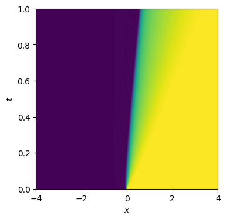
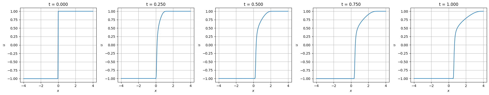
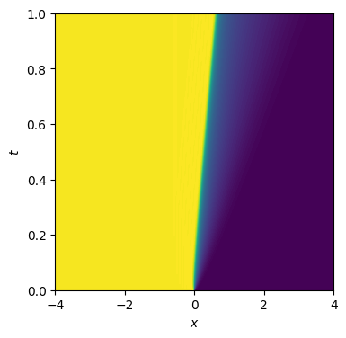
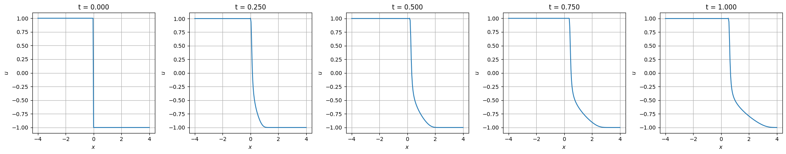
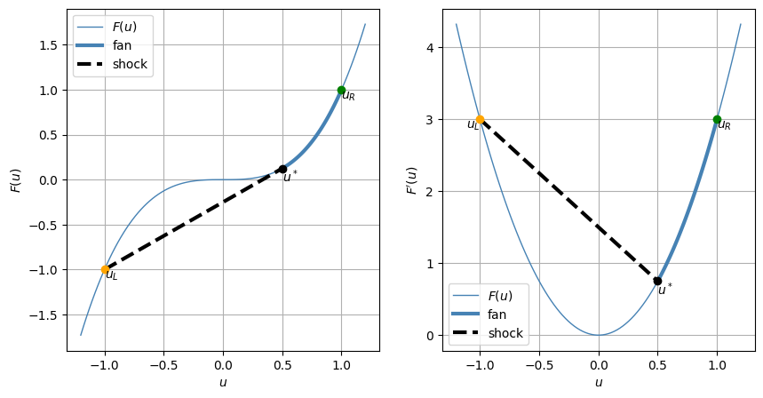
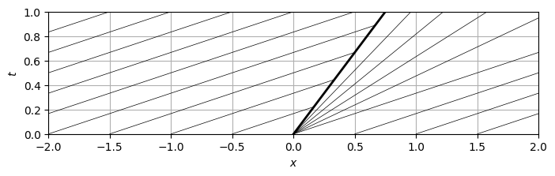
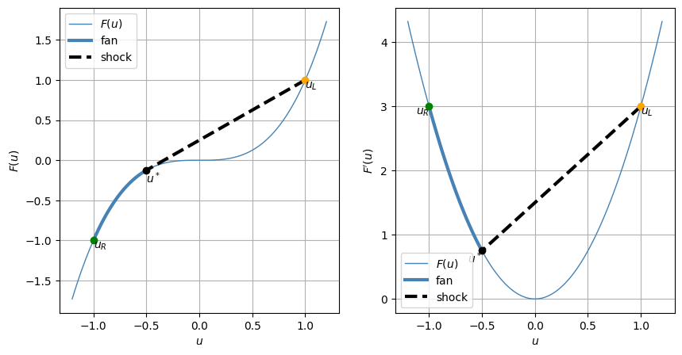

28.11. Non-convex hyperbolic problems#
In this section, non-convex hyperbolic problems are briefly discussed using a non-linear scalar equation as a toy problem to show their characteristics. The main topic is the solution of a Riemann problem. Depending on the initial conditions, the solution of the Rieamnn problem for a non-convex hyperbolic scalar equation may involve not only simple waves (like shock or rarefaction), but also composite waves, combining both a shock and a rarefaction.
First, a numerical simulation of a Riemann problem the viscous counterpart of the hyperbolic equation is performed and the solution is discussed. Then, the solution is discussed introducing the Olenik criterion to find the physical solution.
28.11.1. Toy problem#
The non-linear scalar equation
with flux \(F(u) = u^3\) is a hyperbolic equation with non-convex flux, as
28.11.1.1. Numerical simulation#
The numerical simulation of two Riemann problem of the viscous counterpart of the hyperbolic equation,
is performed here with a time-explicit finite-difference method for two different initial conditions: \(1)\) \((u_L, u_R) = (-1, 1)\), \(2)\) \((u_L, u_R) = (1,-1)\).
Here, the value of the diffusion coefficient is choosen as \(\nu = .05\) as a compromise between thickness of the “shock” and the stability requirement of the numerical method.
Show code cell source
import numpy as np
import matplotlib.pyplot as plt
# from tqdm import tqdm
#> Parameters
nu = .05
x0, x1 = -4., 4.
#> Discretization
nx = 201
dt = .001
#> Domain
xv = np.linspace(x0, x1, nx)
dx = xv[1] - xv[0]
#> Flux
flux = lambda u: u**3
dflux = lambda u: 3*u**2
28.11.1.1.1. Simulation with \((u_L, u_R) = (-1,1)\)#
The solution is the combination of a left shock between state \(u_L = -1\) and an intermediate state \(u^* = \frac{1}{2}\), and a right fan between \(u^*\) and \(u_R = 1\).
Show code cell source
#> Initial conditions
uL, uR = -1., 1.
u0 = uR * np.ones(nx)
u0[xv < 0.] = uL
it = 0
t = 0.
tv = [ t ]
u = u0.copy()
U = [ u.copy() ]
for it in range(1000):
u_minus = .5 * ( u[ :-2] + u[1:-1] ); f_minus = flux(u_minus)
u_plus = .5 * ( u[1:-1] + u[2: ] ); f_plus = flux(u_plus)
u[1:-1] -= dt * ( ( f_plus - f_minus ) / dx - nu * ( u[2:] - 2*u[1:-1] + u[:-2] ) / dx**2 )
t += dt
U.append(u.copy())
tv.append(t)
U = np.array(U)
tv = np.array(tv)
Show code cell source
#> x-t diagram
fig, ax = plt.subplots(1,1, figsize=(4,4))
X, T = np.meshgrid(xv, tv)
ax.contourf(X, T, U, 100)
ax.set_xlabel(r'$x$')
ax.set_ylabel(r'$t$')
plt.show()

Show code cell source
#> u(x,t)
n_plots = 4
nt = len(tv)
dn_plot = int( np.floor(nt/n_plots) )
fig, ax = plt.subplots(1,n_plots+1, figsize=(4*(n_plots+1),4))
for i_plot in range(n_plots+1):
ax[i_plot].plot(xv, U[dn_plot*i_plot,:])
ax[i_plot].set_xlabel(r'$x$')
ax[i_plot].set_ylabel(r'$u$')
ax[i_plot].set_title(f't = {tv[dn_plot*i_plot]:.3f}')
ax[i_plot].grid()
plt.tight_layout()
plt.show()

28.11.1.1.2. Simulation with \((u_L, u_R) = (1,-1)\)#
The solution is the combination of a left shock between state \(u_L = 1\) and an intermediate state \(u^* = \frac{1}{2}\), and a right fan between \(u^*\) and \(u_R = -1\).
Show code cell source
#> Initial conditions
uL, uR = 1., -1.
u0 = uR * np.ones(nx)
u0[xv < 0.] = uL
it = 0
t = 0.
tv = [ t ]
u = u0.copy()
U = [ u.copy() ]
for it in range(1000):
u_minus = .5 * ( u[ :-2] + u[1:-1] ); f_minus = flux(u_minus)
u_plus = .5 * ( u[1:-1] + u[2: ] ); f_plus = flux(u_plus)
u[1:-1] -= dt * ( ( f_plus - f_minus ) / dx - nu * ( u[2:] - 2*u[1:-1] + u[:-2] ) / dx**2 )
t += dt
U.append(u.copy())
tv.append(t)
U = np.array(U)
tv = np.array(tv)
Show code cell source
#> x-t diagram
fig, ax = plt.subplots(1,1, figsize=(4,4))
X, T = np.meshgrid(xv, tv)
ax.contourf(X, T, U, 100)
ax.set_xlabel(r'$x$')
ax.set_ylabel(r'$t$')
plt.show()

Show code cell source
#> u(x,t)
n_plots = 4
nt = len(tv)
dn_plot = int( np.floor(nt/n_plots) )
fig, ax = plt.subplots(1,n_plots+1, figsize=(4*(n_plots+1),4))
for i_plot in range(n_plots+1):
ax[i_plot].plot(xv, U[dn_plot*i_plot,:])
ax[i_plot].set_xlabel(r'$x$')
ax[i_plot].set_ylabel(r'$u$')
ax[i_plot].set_title(f't = {tv[dn_plot*i_plot]:.3f}')
ax[i_plot].grid()
plt.tight_layout()
plt.show()

28.11.1.2. Olenik’s criterion#
In a Riemann problem with two values \(u_L\), \(u_R\), with \(F''(u_L) F''(u_R) < 0\) - so that non-convexity manifests itself, and assuming that \(F''(u)\) changes sign only once (see the comment below for more complex flux functions -, a composite wave occurs. This composite wave is composed of a rarefaction wave and a shock wave.
The intermediate state \(u^*\) is found with the condition that the speed of the shock equals the characteristic speed of the fan at the shock, i.e.
or
i.e. the slope \(F'(u^*)\) of the tangent line at \(F(u)\) in \(u^*\) equals the slope of the line connecting the state \((\cdot)^*\) with \((\cdot)_L\). This condition prevents characteristic lines from originating from the shock.
todo
With more “complex” flux functions \(F(u)\) (that have several ranges of \(u\)-values where \(F''(u)\) changes sign), how many waves in the composite wave? Show how Olenik’s criterion applies.
28.11.1.2.1. \((u_L, u_R) = (-1, 1)\)#
Show code cell source
uL, uR = -1., 1.
us = .5
fig, ax = plt.subplots(1,2, figsize=(10,5))
uv = np.linspace(-1.2, 1.2, 100)
fuv = flux(uv)
dfuv = dflux(uv)
uv_sR = np.linspace(us, uR, 100)
fuv_sR = flux(uv_sR)
dfuv_sR = dflux(uv_sR)
ax[0].plot(uv , fuv , lw=1., color='steelblue', label=r'$F(u)$')
ax[0].plot(uv_sR, fuv_sR, lw=3., color='steelblue', label=r'fan' )
ax[0].plot([uL, us], [flux(uL), flux(us)], 'k--', lw=3, label='shock')
ax[0].plot(uL, flux(uL), 'o', color='orange'); ax[0].text(uL, flux(uL), r'$u_L$', va='top')
ax[0].plot(uR, flux(uR), 'o', color='green' ); ax[0].text(uR, flux(uR), r'$u_R$', va='top')
ax[0].plot(us, flux(us), 'o', color='black' ); ax[0].text(us, flux(us), r'$u^*$', va='top')
ax[0].set_xlabel(r'$u$')
ax[0].set_ylabel(r'$F(u)$')
ax[0].legend()
ax[0].grid()
ax[1].plot(uv , dfuv , lw=1., color='steelblue', label=r'$F(u)$')
ax[1].plot(uv_sR, dfuv_sR, lw=3., color='steelblue', label=r'fan' )
ax[1].plot([uL, us], [dflux(uL), dflux(us)], 'k--', lw=3, label='shock')
ax[1].plot(uL, dflux(uL), 'o', color='orange'); ax[1].text(uL, dflux(uL), r'$u_L$', va='top', ha='right')
ax[1].plot(uR, dflux(uR), 'o', color='green' ); ax[1].text(uR, dflux(uR), r'$u_R$', va='top')
ax[1].plot(us, dflux(us), 'o', color='black' ); ax[1].text(us, dflux(us), r'$u^*$', va='top')
ax[1].set_xlabel(r'$u$')
ax[1].set_ylabel(r"$F'(u)$")
ax[1].legend()
ax[1].grid()
plt.show()

28.11.1.2.2. Characteristic lines in the \(x-t\) plane#
Show code cell source
#> characteristic lines in xt plane
fig, ax = plt.subplots(1,1, figsize=(8,8))
vL = dflux(uL); thetaL = np.arctan(vL)
vR = dflux(uR); thetaR = np.arctan(vR)
vs = dflux(us); thetas = np.arctan(vs)
t_plot = 1.
n_angles = 5
#> Fan
for iv in range(5):
theta = thetas + iv/n_angles * (thetaR-thetas)
vel = np.tan(theta)
ax.plot([0, vel*t_plot], [0, t_plot], color='black', lw=0.5)
#> Shock
ax.plot([0, vs*t_plot], [0, t_plot], color='black', lw=2)
#> Uniform regions
for iv in range(10):
dx = - iv * .5
#> Intersection x(t) = dx + vL * t, xs(t) = vs * t
t_int = dx / ( vs - vL )
ax.plot([ dx, dx+vL*t_int], [0, t_int], color='black', lw=.5)
for iv in range(5):
dx = iv * .5
ax.plot([ dx, dx+vR*t_plot], [0, t_plot], color='black', lw=.5)
ax.set_aspect('equal')
ax.set_xlabel(r'$x$')
ax.set_ylabel(r'$t$')
ax.set_xlim(-2,2)
ax.set_ylim(0,t_plot)
ax.grid()
plt.show()

28.11.1.2.3. \((u_L, u_R) = (1, -1)\)#
Show code cell source
uL, uR = 1., -1.
us = -.5
fig, ax = plt.subplots(1,2, figsize=(10,5))
uv = np.linspace(-1.2, 1.2, 100)
fuv = flux(uv)
dfuv = dflux(uv)
uv_sR = np.linspace(us, uR, 100)
fuv_sR = flux(uv_sR)
dfuv_sR = dflux(uv_sR)
ax[0].plot(uv , fuv , lw=1., color='steelblue', label=r'$F(u)$')
ax[0].plot(uv_sR, fuv_sR, lw=3., color='steelblue', label=r'fan' )
ax[0].plot([uL, us], [flux(uL), flux(us)], 'k--', lw=3, label='shock')
ax[0].plot(uL, flux(uL), 'o', color='orange'); ax[0].text(uL, flux(uL), r'$u_L$', va='top')
ax[0].plot(uR, flux(uR), 'o', color='green' ); ax[0].text(uR, flux(uR), r'$u_R$', va='top')
ax[0].plot(us, flux(us), 'o', color='black' ); ax[0].text(us, flux(us), r'$u^*$', va='top')
ax[0].set_xlabel(r'$u$')
ax[0].set_ylabel(r'$F(u)$')
ax[0].legend()
ax[0].grid()
ax[1].plot(uv , dfuv , lw=1., color='steelblue', label=r'$F(u)$')
ax[1].plot(uv_sR, dfuv_sR, lw=3., color='steelblue', label=r'fan' )
ax[1].plot([uL, us], [dflux(uL), dflux(us)], 'k--', lw=3, label='shock')
ax[1].plot(uL, dflux(uL), 'o', color='orange'); ax[1].text(uL, dflux(uL), r'$u_L$', va='top', ha='left')
ax[1].plot(uR, dflux(uR), 'o', color='green' ); ax[1].text(uR, dflux(uR), r'$u_R$', va='top', ha='right')
ax[1].plot(us, dflux(us), 'o', color='black' ); ax[1].text(us, dflux(us), r'$u^*$', va='top', ha='right')
ax[1].set_xlabel(r'$u$')
ax[1].set_ylabel(r"$F'(u)$")
ax[1].legend()
ax[1].grid()
plt.show()
